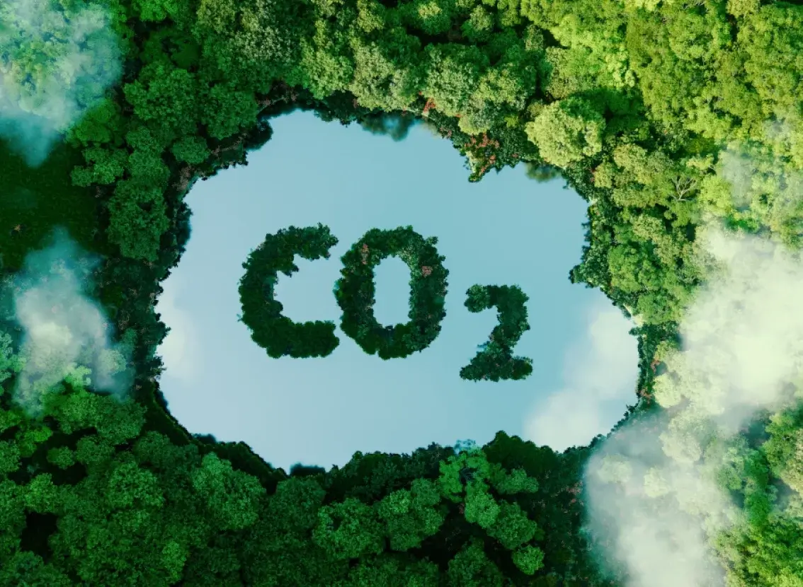

Transforma tu huella en impacto con
KARBONZERO
Una plataforma que te guía para calcular, reducir y compensar tu huella de carbono personal y empresarial, con datos reales y herramientas precisas.
Comienza ahora¿Qué es KARBONZERO?
KARBONZERO es un sistema que permite a empresas y personas medir y gestionar su huella de carbono con gran precisión y personalización. Utilizamos factores de conversión aprobados por el IPCC, y ofrecemos la posibilidad de agregar factores propios para adaptar los cálculos a cada contexto.
Las estimaciones no pueden ser 100% exactas por la complejidad y diversidad de procesos, pero KARBONZERO garantiza flexibilidad y transparencia, para que tomes decisiones informadas y responsables en el cuidado del planeta.
Además, la app móvil recopila datos reales del consumo diario, permitiendo análisis avanzados que impulsan mejoras ambientales sostenibles.

¿Cómo Funciona?
1. Mide
Registra hábitos como transporte, energía, alimentación y consumo. La app calcula tu huella con precisión.
2. Reduce
Recibe recomendaciones basadas en ciencia para tomar decisiones sostenibles y reducir emisiones.
3. Compensa
Invierte en proyectos certificados como reforestación y energías limpias para neutralizar tu huella.
Beneficios de usar Karbonzero
Más que una plataforma, KARBONZERO es tu aliado climático. Aquí te mostramos cómo te ayudamos a lograr un impacto positivo.
Datos reales
Obtén informes precisos y personalizados sobre tus emisiones.
App móvil
Mide tu huella diaria fácilmente con nuestra aplicación.
Comunidad consciente
Forma parte de una red que actúa por el planeta.
¿Quieres empezar hoy mismo?
Prueba KARBONZERO y comienza a transformar tu impacto ambiental. ¡Es fácil y accesible para todos!